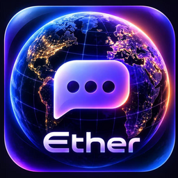

No one is online yet
Open the Contacts tab to add your first peer.
No calls yet
My contacts
Everyone you've added. Tap a contact to chat or call.
No contacts yet.
Add contact
Enter a phone number or email — once that person opens the app too, you'll be connected automatically.
Online now
Everyone who has the app open right now on the same signaling server and hasn't hidden themselves.
No one is visible.
Invite via code
Step 1 · send the code
Step 2 · paste the answer code
I have an invite code
To show a preview, the signaling server briefly fetches the link on your behalf — it sees which link, not the message.
Empty by default — translating a message sends its text in the open to this server, so pick one you trust. Without one set, "Translate" in a message's menu just explains that.
Ether has no server backup — everything lives only on this device. If you lose or replace this device, contacts, groups and messages are gone unless you save a backup file yourself.
Best-effort, not a guaranteed silent trigger — a sharp shake (e.g. someone grabbing your phone) shows a brief cancellable warning, then wipes this device if not cancelled. False positives are possible; test it before relying on it.
Permanently erases contacts, messages and keys from this device. There is no server copy to restore from — make a backup first if you want one.
Turns off the animated background and lowers blur — for a quieter, more focused interface.

Ether Designed by AIK in Moscow, Holy Russia, Planet Earth, Solar System, Local Interstellar Cloud, Local Bubble, Orion Arm, Milky Way Galaxy, Local Group of Galaxies, Virgo Supercluster, Laniakea Supercluster, Pisces–Cetus Supercluster Complex, Observable Universe, UniverseBest-effort, not a guaranteed background trigger: each time you open Ether, it sends a small "I'm alive" signal to the contact below; it only updates when the other side also opens Ether. If you'd like, enable it there too to be alerted after your own silence.
Includes contacts, messages and settings. Photos, videos and voice messages sent or received are stored only on this device and are not included.